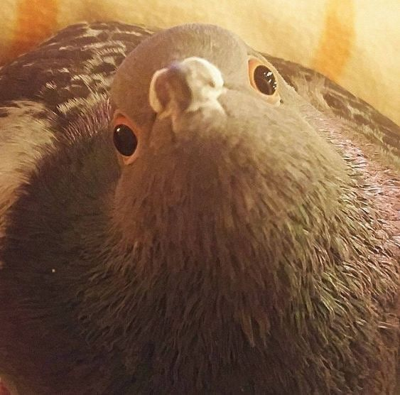

BIOLOGY EDUCSOURCE: Artificial Selection
Artificial selection is when one enhances and perpetuates desirable traits in future generations of plants and animals identified by humans. It's similar to natural selection but with human interference. Pigeons are an example of animals bred for desirable traits in captivity.
Charles Darwin's theory of natural selection, presented in his book 'On the Origin of Species,' is based on the idea that organisms with traits that make them more likely to survive, mature, and reproduce in their environment pass on their traits to the next generation. Darwin's observations of different species of finches on the Galápagos Islands provided significant evidence for his theory. Artificial selection, on the other hand, is the process of selectively breeding organisms for specific traits. Humans have used artificial selection for centuries in agriculture and animal breeding to create desired traits and improve crops and animals.
Author: XC